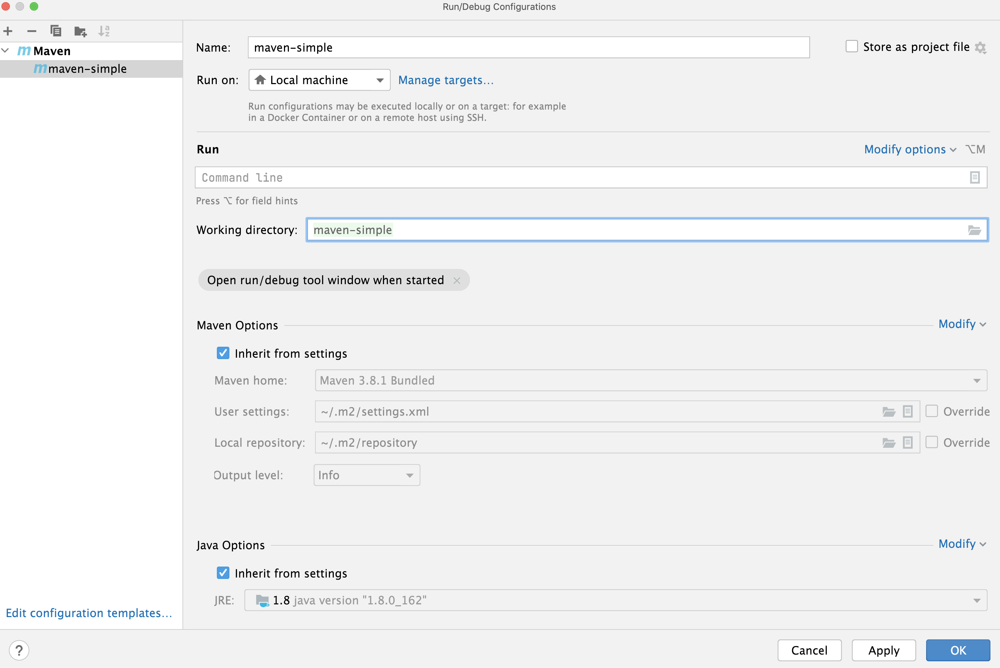

Atelier 04
Dans cette séance de laboratoire, vous révisez l'écriture de javadoc dans votre code, la conversion en sites web lisibles par l'humain, et vous vous exercerez aux bases du système de construction Maven. Vous n'avez pas besoin de télécharger de nouveau code pour cette séance de laboratoire.
JavaDoc
Lors du dernier cours, nous avons brièvement vu la notation pour les commentaires JavaDoc. En rappel rapide :
- Les commentaires réguliers, en une ligne, commencent par deux barres obliques :
- Les commentaires plus longs, sur plusieurs lignes, sont délimités par un marqueur de début et de fin :
/* Here is a longer comment
that makes up multiple
lines, because it is very
sophisticated.*/
int answer = 42;
- Les commentaires JavaDoc commencent par une barre oblique suivie de deux étoiles :
/**
* Here is a JavaDoc comment that describes some detail about a function.
*/
public void foo() {
...
}
Qu'est-ce que JavaDoc ?
Les commentaires JavaDoc ne sont pas seulement pour les programmeurs, mais aussi pour les utilisateurs. Ils ne "disparaissent" pas lors de la compilation, mais peuvent être utilisés comme entrée pour la génération de documentation.
Tâche 1, Du Code à la Documentation
Le flux de travail pour écrire et utiliser JavaDoc est le suivant :
- Un développeur écrit des commentaires JavaDoc, dans le cadre de son code source.
- Un développeur utilise la commande
javadoc(installée automatiquement avecjavac) pour générer une documentation. - Les utilisateurs de logiciels ou les développeurs utilisant le logiciel peuvent utiliser la documentation pour comprendre rapidement comment le code fonctionne.
Toutes les classes et fonctions internes de Java sont documentées à 100 %, et la documentation JavaDoc générée est
disponible publiquement.
Vous pouvez par exemple consulter rapidement les méthodes disponibles pour les objets String en utilisant
la Référence JavaDoc en ligne.
À vous de jouer
- Écrivez un nouveau programme Java court qui convertit toutes les lettres minuscules d'une chaîne en lettres majuscules :
- Exemple :
String myString = "IloVeThIScouRsEinF2050iSAmAzIng";
// Use the API reference to find the right method.
// Must print: ILOVETHISCOURSEINF2050ISAMAZING
System.out.println(myString.theMagicMethodYouhaveToFind());
Tâche 2, Du Code aux Docs
Dans cette deuxième tâche, vous pratiquerez comment générer vous-même un résumé de documentation lisible par l'humain.
- Revenez sur le programme que vous avez précédemment écrit pour convertir une chaîne d'exemple en majuscules, et
assurez-vous que le code est dans une méthode dédiée :
toUpperOrLower. toUpperOrLowerdoit prendre 2 arguments, une chaîne et un booléen.- Si le booléen est vrai, une version en majuscules de la chaîne est retournée ; sinon, une version en minuscules de la chaîne.
- Assurez-vous que votre code est complètement documenté avec javadoc (la classe et toutes les méthodes).
À vous de jouer
Maintenant, c'est à vous de générer JavaDoc à partir de votre code.
- Au lieu de compiler votre code avec
javac, utilisez la commandejavadocpour produire une documentation. - La commande est :
javadoc -d /Users/schieder/Desktop/javadoc plants- Où
/Users/schieder/Desktop/javadocest remplacé par le chemin vers votre bureau. - Vous pouvez choisir un autre chemin, par exemple vers /tmp.
- Si vous êtes sous Windows, vous devez certainement utiliser des barres obliques inverses (
\).
- Où
- Si vous voyez un nouveau dossier
javadoc, contenant un fichierindex.html, la commande a réussi. - Lorsque vous ouvrez
index.htmlavec votre navigateur, vous verrez principalement un site web vide.- C'est parce que vous n'avez probablement pas beaucoup de
JavaDocdans votre code source Java.
- C'est parce que vous n'avez probablement pas beaucoup de
- La commande
javadocimprime en fait un avertissement chaque fois qu'une de vos méthodes ou classes manque un commentaire.
Maintenant, commentez votre code avec des commentaires javadoc. Commentez et relancez la commande jusqu'à ce qu'il n'y ait plus d'avertissements !
- Commentez chaque classe.
- Commentez chaque méthode.
- Ajoutez une
ligne
@param ...décrivant chaque paramètre de méthode. - Ajoutez une
ligne
@returns ...décrivant chaque valeur de retour.
- Ajoutez une
ligne
- Ne commentez pas les méthodes ayant une annotation
@Override(celles-ci n'ont besoin que de commentaires dans les interfaces correspondantes).
Écrire JavaDoc n'est PAS un luxe optionnel.
Dans votre TP, tout votre code doit être 100% documenté. Si la commande javadoc soulève un seul avertissement, vous perdrez des points (beaucoup).
Maven
En classe, nous avons vu que Maven est un système de construction qui permet la gestion automatique des dépendances et
la modification du processus de construction à l'aide de plugins.
Dans le reste de la séance de laboratoire, vous utiliserez la commande Maven et des modifications simples du fichier de
configuration pom.xml.
Hello World
Les projets Maven doivent respecter une structure de documents spécifique et une syntaxe spécifique pour le pom.xml.
- En classe, nous avons vu une commande pour configurer un nouveau projet Maven, en utilisant la commande
mvn:
À vous de jouer
- Personnalisez la commande pour que l'ID de groupe soit un nom de package valide, vous représentant en tant que
développeur :
ca.uqam.info.prenomnom. - Exécutez la commande et inspectez la structure du nouveau projet créé.
- Allez dans le nouveau projet et compilez les sources en utilisant la commande
mvn clean compile.- Pourquoi est-il de bonne pratique d'exécuter le paramètre
cleanà chaque fois ? Essayez simplementmvn cleanetmvn compilepour remarquer la différence.
- Pourquoi est-il de bonne pratique d'exécuter le paramètre
Le plugin exec
Par défaut, les projets Maven ne compilent que et n'ont pas de classe principale spécifiée.
Pourquoi tous les projets Java ne devraient-ils pas avoir une classe principale ?
En réalité, de nombreux projets Java fournissent uniquement des fonctionnalités, mais pas de classe principale pour exécuter / lancer le code : ce sont toutes des bibliothèques Java.
En classe, j'ai brièvement montré comment le pom.xml peut être modifié pour spécifier une classe principale.
À vous de jouer
- Revisitez les notes de cours, consultez l'utilisation du plugin
exec. - Modifiez le fichier
pom.xml, ajoutez le pluginexecet spécifiez la classe principale. - Exécutez votre projet avec
mvn clean compile exec:java. - Vérifiez que votre programme s'exécute correctement et imprime le message
Hello, World.
Pourquoi ne pas simplement utiliser mvn exec:java (qui exécute également le code) ?
mvn exec:java exécute en effet le code. Cependant, il ne
compile pas les sources, donc il est possible que vous exécutiez
quelque chose de différent de ce que vous avez actuellement écrit dans
votre éditeur de code source. Utilisez toujours mvn clean compile exec:java pour exécuter votre code.
Utilisation d'une bibliothèque
En classe, nous avons vu comment Maven peut être utilisé pour ajouter des bibliothèques à un projet, en ajoutant un bloc
de dépendances au pom.xml.
- Les dépendances vous permettent d'accéder facilement à des bibliothèques Java.
- Les bibliothèques sont idéales lorsque vous souhaitez réutiliser une fonctionnalité complexe.
- Un exemple est le hachage MD5, qui est pertinent pour les sommes de contrôle et la vérification de l'intégrité des fichiers.
- Exemple : la somme de contrôle MD5 de la chaîne
Schiedermeierest50707bed5659e48b953b8b64a64c9f1c.
À vous de jouer
- Intégrez la bibliothèque Apache Commons IO dans votre projet Maven.
- Visitez le dépôt central Maven.
- Recherchez et trouvez l'artifact
apache commons codecà l'aide du champ de recherche. - Copiez le bloc de dépendance (extrait XML) pour la version la plus récente de la bibliothèque.
- Ajoutez l'extrait au bon endroit dans votre
pom.xml.
- Modifiez votre projet Hello World afin que...
- Il crée une chaîne avec votre nom de famille.
- Il appelle correctement la
méthode
md5Hexpour convertir votre nom de famille en une somme de contrôle MD5. - Il imprime la somme de contrôle à l'écran.
- Vérifiez le résultat en utilisant ce calculateur de somme de contrôle en ligne.
Le plugin JavaDoc
Au début du cours, vous avez appris à générer une JavaDoc lisible par l'humain à l'aide de la commande javadoc.
- La documentation doit être actualisée chaque fois que le code est modifié.
- Bien sûr, il serait fastidieux d'appeler manuellement la commande
javadocchaque fois que vous modifiez du code. - Heureusement,
javadocpeut être invoqué dans le cadre du processus de construction avec Maven. Tout ce dont vous avez besoin est le plugin JavaDoc.
À vous de jouer
- Revisitez les notes de cours sur les plugins Maven, trouvez le snippet du plugin à ajouter à votre
pom.xml. - Ajoutez le plugin
javadocà votre configurationpom.xml. - Relancez Maven avec
mvn clean package. - Lisez attentivement la sortie du processus de construction.
- Pour chaque avertissement ou erreur, corrigez votre documentation jusqu'à ce que la construction réussisse.
Documentez tôt
25 % de votre note pour le TP1 dépend de la qualité de vos JavaDocs. Écrire de la documentation est facile au moment où vous écrivez votre code, car vous savez exactement comment cela fonctionne. Écrire la documentation plus tard est fastidieux et lent. Construisez régulièrement votre projet avec Maven et tenez à jour la documentation.
Le plugin Jar
Il est souvent nécessaire de s'assurer que votre projet Java peut être livré au client sous la forme d'un seul fichier. Dans la dernière unité de cours, vous avez appris que les fichiers JAR peuvent être créés manuellement en zippant le bytecode Java compilé.
- Comme pour la documentation, il est bon de produire un fichier JAR livrable à chaque modification du code.
- Comme pour la documentation, il serait fastidieux de le faire manuellement en ligne de commande à chaque changement de code.
- Heureusement, Maven peut être configuré pour le faire pour vous.
À vous de jouer
- Revisitez les notes de cours sur les plugins Maven, trouvez le snippet du plugin à ajouter à votre
pom.xml. - Ajoutez le plugin
maven-jar-pluginà votre configurationpom.xml.- Assurez-vous de spécifier la classe principale dans la configuration du plugin.
- Relancez Maven avec
mvn clean package. - Lisez attentivement la sortie du processus de construction.
- Inspectez le dossier
targetgénéré, y a-t-il un nouveau fichier ? - Vérifiez que vous pouvez exécuter votre fichier JAR en utilisant la commande
java -jar votrefichier.jar.
Testez votre fichier Jar TP1
Votre soumission TP1 doit produire un fichier JAR valide avec mvn clean package. Testez le JAR produit avant de soumettre, pour vous assurer d'obtenir ces points.
Le triangle vert
Pour votre TP, vous voudrez certainement utiliser un IDE, par exemple IntelliJ. C'est tout à fait acceptable, et nous couvrirons également les IDE plus en détail dans un prochain cours. Cependant, faites très attention aux boutons et aux menus qui semblent simplifier les choses de manière magique.
Les IDE sont puissants, mais réfléchissez avant de cliquer sur 'exécuter'
Par défaut, le triangle vert (pom.xml
et que votre projet est structuré comme un projet Maven, Maven n'est
pas appelé lorsque vous cliquez sur le bouton d'exécution. Si vous
souhaitez utiliser le triangle vert, vous devez ajouter manuellement une configuration d'exécution Maven pour surcharger le comportement du triangle.
Les configurations d'exécution sont des comportements définis par l'utilisateur associés au triangle vert.
À vous de jouer
Ajoutons maintenant une configuration qui compile et exécute votre code, en utilisant Maven.
- Dans la barre de menu supérieure, sélectionnez
Exécuter->Modifier les configurations. - Dans la fenêtre contextuelle, cliquez sur le signe
+, et sélectionnezMaven. - Vous verrez une formule de configuration spécifique à Maven : 
- Donnez un nom correspondant à votre configuration, par exemple
Construire et exécuter. - Dans le champ
Exécuter / Ligne de commande, ajoutez la commande Maven que vous souhaitez invoquer, par exempleclean package exec:java(notez que la commande initialemvnest obsolète). - Fermez la boîte de dialogue et cliquez sur le triangle vert (
▶ ). - Vérifiez que Maven est appelé et que votre projet est construit et exécuté.